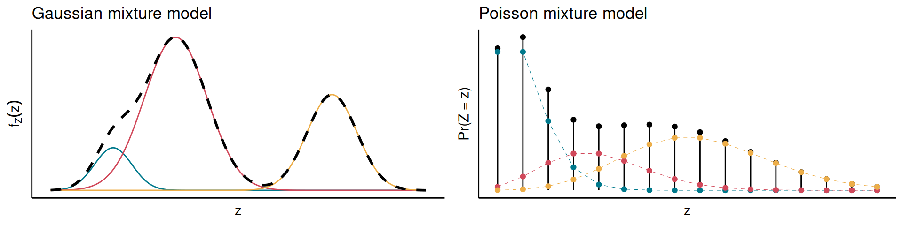
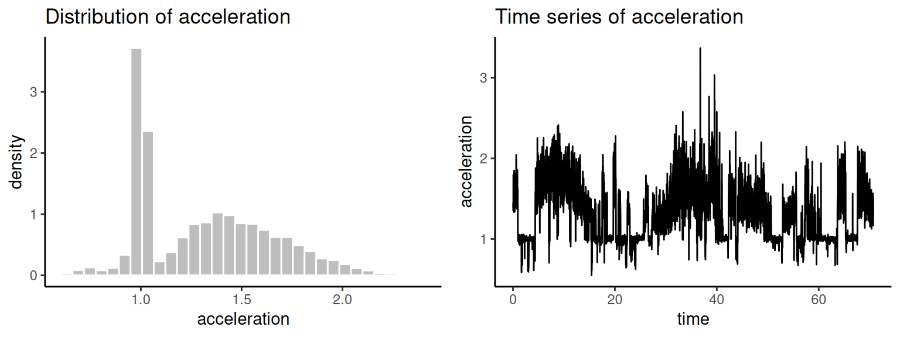
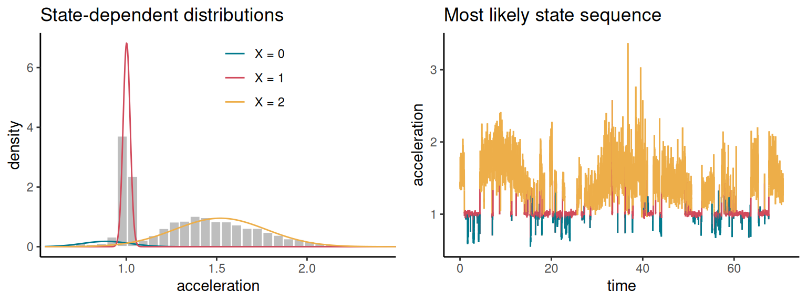
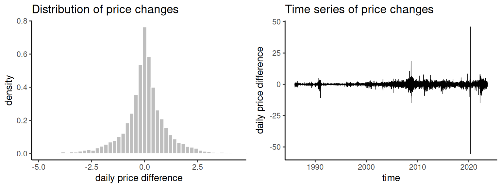
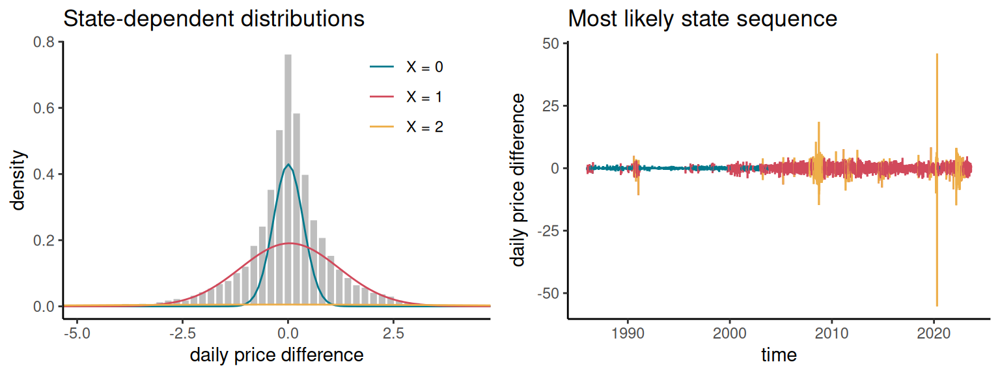

5 Hidden Markov models
Markov processes are a convenient approach to model temporal dependence while retaining (some) mathematical simplicity but, to estimate the Markov process from data, we need to observe that process directly. However, there are many situations where the process is observed only indirectly, i.e., our observations depend on something that can be described by a Markov process. There is a vast literature on models for such situations; they are called state-space models when the state space of the Markov process is continuous, and hidden Markov models when it is discrete. Hidden Markov models were developed more recently than other models covered in this course, but they are now widely-used in various areas of applications (finance, medicine, ecology, etc.).
5.1 Mixture models
We start with the description of mixture models, on which hidden Markov models build. A mixture model describes a random variable which can come from several different distributions, each with some probability.
Consider the random variable \(Z\), which follows one of \(K\) distributions, with respective probability density (or mass) functions \(b_1, b_2, \dots, b_K\). For any \(k \in \{ 1, \dots, K \}\), we further assume that \(Z\) follows the \(k^\text{th}\) distribution (\(b_k\)) with probability \(\pi_k\), where \(\sum_{k=1}^K \pi_k = 1\).
The probability mass/density function of \(Z\) under this model is a linear combination of the component functions, each weighted by the probability of the component: \[ \begin{aligned} f(Z = z) & = \sum_{k=1}^K f(Z = z \mid C = k) \times \Pr(C = k) \\ & = \sum_{k = 1}^K \pi_k b_k(z) \end{aligned} \]
Examples of mixture model with three components is shown in Figure fig-mix-model. For one of them, the \(b_k\) are normal probability distribution functions; for the other, they are Poisson probability mass functions. In both cases, the mixture model has much more flexibility than a single distribution from that family.
Mixture models have been popular for model-based clustering. Consider \(n\) observations \(z_1, \dots, z_n\), assumed to be realisations from \(n\) independent random variables described by some mixture model. Various approaches have been developed to estimate parameters of the component distributions and the weight \(\pi_i\) of each component, and to group the observations by “most likely component”.
Hidden Markov models can be viewed as dependent mixture models, i.e., where successive observations are not independent.
5.3 Likelihood
Hidden Markov models are mostly interesting to applied statisticians and scientists (rather than probabilists), and so most of the related work has been on statistical inference. Given a sequence of observations, the main questions are usually:
- Can we estimate the state-dependent distributions \(b_k\)?
- Can we estimate the transition probabilities of the underlying Markov chain?
- Can we infer the most likely value for the state process at each time step?
An important step to answer these questions is to derive the likelihood function for this model, i.e., the joint probability (or probability density) of a sequence of observations. This is challenging because the model is specified in terms of random variables that are not observed (the states \(X_1, X_2, \dots\)), and this section presents two methods to compute the likelihood. The mathematical derivations might seem a little tedious, but you will notice that we only use basic probability rules, and we take advantage of the dependence structure of the hidden Markov model to find the likelihood.
5.3.1 First attempt
We want to find the joint probability density/mass function of the random variables \(Z_0, Z_1, \dots, Z_n\), which we will denote as \(L = f(Z_0 = z_0, \dots, Z_n = z_n)\) for convenience. When viewed as a function of the unknown model parameters, \(L\) is the likelihood, and can be maximised numerically for estimation. We will also write \(\boldsymbol{Z}_{0:n} = \{ Z_0, \dots, Z_n \}\) and similar notation for brevity.
By repeatedly applying the law of total probability, and leveraging the Markov property of \((X_n)\), we see that \[ \begin{aligned} L & = \sum_{X_n \in \mathcal{S}} f(\boldsymbol{Z}_{0:n} \mid X_n) \Pr(X_n) \\ & = \sum_{X_n \in \mathcal{S}} \sum_{X_{n-1} \in \mathcal{S}} f(\boldsymbol{Z}_{0:n} \mid X_{n-1}, X_n) \Pr(X_n \mid X_{n-1}) \Pr(X_{n-1}) \\ & = \sum_{X_n \in \mathcal{S}} \sum_{X_{n-1} \in \mathcal{S}} \sum_{X_{n-2} \in \mathcal{S}} f(\boldsymbol{Z}_{:n} \mid X_{n-2}, X_{n-1}, X_n) \\ & \qquad\qquad\times \Pr(X_n \mid X_{n-1}, X_{n-2}) \Pr(X_{n-1} \mid X_{n-2}) \Pr(X_{n-2}) \\ & = \sum_{X_n \in \mathcal{S}} \sum_{X_{n-1} \in \mathcal{S}} \sum_{X_{n-2} \in \mathcal{S}} f(\boldsymbol{Z}_{0:n} \mid X_{n-2}, X_{n-1}, X_n) \\ & \qquad\qquad\times \Pr(X_n \mid X_{n-1}) \Pr(X_{n-1} \mid X_{n-2}) \Pr(X_{n-2}) \\ & = \dots \\ & = \sum_{X_0 \in \mathcal{S}} \dots \sum_{X_n \in \mathcal{S}} \left\{ f(\boldsymbol{Z}_{0:n} \mid X_{0:n}) \times \Pr(X_0) \times \prod_{m=1}^n \Pr(X_m \mid X_{m-1}) \right\} \end{aligned} \]
(Above, we are using a slight abuse of notation, so that the formula fits on a page. Take some time to think about it, and make sure you understand what the probabilities and \(f\) refer to.)
Now, remember that the observations are conditionally independent given the states, so \[ f(\boldsymbol{Z}_{0:n} \mid X_{0:n}) = \prod_{m=0}^n f(Z_m \mid X_m) \]
We now recognise that the likelihood can be written in terms of the state-dependent distributions, the initial distribution of the state process, and the transition probabilities. As before, we use the notation
- \(b_k(z) = f(Z_m = z \mid X_m = k)\),
- \(P_{ij} = \Pr(X_{m+1} = j \mid X_m = i)\),
- \(u_i^{(m)} = \Pr(X_{m} = i)\).
Then, the joint density of the observations is \[ L = \sum_{x_0 \in \mathcal{S}} \dots \sum_{x_n \in \mathcal{S}} \left\{ u_{x_0}^{(0)} \prod_{m=0}^n b_{x_m}(z_m) \prod_{m=1}^n P_{x_{m-1},x_m} \right\} \]
This is a relatively simple expression, which would in principle be straightforward to implement with a computer (for maximum likelihood estimation, for example). However, it is extremely computationally expensive, with \(\vert \mathcal{S} \vert^{n+1}\) terms to sum, and often not a practical option. The challenge is to sum over all unobserved state sequences, because there are so many possible combinations. In the next section, we present an alternative approach to evaluating the likelihood, which uses matrix operations and offers an elegant solution to this problem.
5.3.2 Second attempt: forward algorithm
A more efficient algorithm to compute the joint probability of observations can be derived using so-called forward variables, or forward probabilities.
When the observation variables are continuous, \(\alpha_k^{(m)}\) represents a probability density rather than a probability, but the term “forward probability” tends to be used loosely in both cases. In what follows, we denote as \(\boldsymbol{\alpha}^{(m)} = (\alpha_0^{(m)}, \alpha_1^{(m)}, \dots)\) the vector of forward probabilities.
We would like to find an iterative method to compute the forward probabilities.
Applying this iteration from \(m = 1\) to \(m = n\) yields \[ \boldsymbol\alpha^{(n)} = \boldsymbol{u}^{(0)} \boldsymbol{B}(z_0) \boldsymbol{P} \boldsymbol{B}(z_1) \cdots \boldsymbol{P} \boldsymbol{B}(z_n). \]
These computations are called the forward algorithm. There is a close link between the forward probabilities and the likelihood, and this gives us another approach to get the likelihood.
Remarkably, the number of operations required to evaluate the matrix product is much smaller than for the original nested sums. It is of the order of \(n \vert \mathcal{S} \vert^2\), and makes it possible to compute the likelihood in many situations. This efficient algorithm has greatly contributed to the popularity of hidden Markov models.
5.4 State probabilities
In the previous section, we computed the probability of a sequence of observations, marginalising over all possible state sequences. Another common problem is to determine what states are most likely to have given rise to a sequence of observations. There are multiple ways to approach this question, and here we focus on deriving the probability that each observation was generated by each state, \[ \eta_k^{(m)} = \Pr(X_m = k \mid Z_0 = z_0, \dots, Z_n = z_n) \]
To derive this probability, we first introduce another convenient quantity.
In practice, the backward probabilities can be computed iteratively, similarly to the forward algorithm.
We can use this formula to compute all backward probabilities iteratively, and this procedure is called the backward algorithm.
It turns out that the state probabilities \(\eta_k^{(m)}\) can be computed easily from the forward and backward probabilities.
5.5 Some examples
5.5.1 Animal telemetry
In the last couple of decades, it has become increasingly possible to track wild animals using telemetry devices. This could be a GPS collar on a polar bear, a depth sensor on a beaked whale, or an accelerometer on an albatross. The resulting data contain an incredible amount of information about the behaviour of those animals, which would be very difficult to obtain otherwise.
Consider the acceleration data shown in Figure fig-albatross-data, which comes from an albatross tagged in South Georgia (a small island in the South Atlantic) and was analysed by Conners et al. (2021). The variable shown here is a derived metric of “heave acceleration”, i.e., acceleration along the bird’s up-down axis, measured every 30 seconds. It is clear that the distribution of acceleration is multimodal, and it looks from the time series plot that there is strong autocorrelation: high acceleration is likely to be followed by high acceleration. The multimodality suggests that a mixture model might be adequate, and the autocorrelation suggests that some dependence is required, making hidden Markov models a natural choice.

Now, say that we use a hidden Markov model with three states, i.e., \(X_m \in \mathcal{S} = \{ 0, 1, 2 \}\), to identify three mixture components. Within each state, we choose to model the acceleration with a normal distribution, i.e., \(b_k\) is the Gaussian probability density function (with parameters dependent on \(k\)). Maximum likelihood estimation based on the forward algorithm can be used to estimate all transition probabilities of \((X_t)\), as well as the state-dependent parameters of the normal distribution of acceleration.
Figure fig-albatross-results shows the estimated state-dependent distribution \(b_k\), and the most likely sequence of unobserved states. In this model, the three states (\(X_m = 0, 1, 2\)) correspond to very low, low, and high heave acceleration, respectively. A biologist could propose a tentative interpretation in terms of albatross behaviour, and the model could then be used to distinguish phases where the animal is resting on water and flying, for example.

Another output of the model is the estimated transition probability matrix of the state process, \[ \widehat{\boldsymbol{P}} = \begin{pmatrix} 0.783 & 0.21 & 0.007 \\ 0.042 & 0.935 & 0.023 \\ 0 & 0.013 & 0.987 \end{pmatrix} \] The large diagonal transition probabilities reflect a strong tendency to persist in each state. We can use the results from Chapter 2 to get insights into the behaviour of albatross. For example, from \(\widehat{\boldsymbol{P}}\), we can see that the expected holding times in the three states are \[ \frac{1}{1 - 0.783} = 4.6,\quad \frac{1}{1 - 0.935} = 15,\quad \text{and } \frac{1}{1 - 0.987} = 77. \]
We can compute the stationary distribution of the Markov chain using any of the methods from Chapter 2, which gives us an estimate of the long-run proportion of time that the bird spends in each behavioural state. Here, we find \[ \boldsymbol{\pi} = (0.06, 0.33, 0.61). \]
These results all suggest that the albatross spends most of its time in the state \(X = 2\).
5.5.2 Oil price
We now turn to the problem of understanding the dynamics of oil prices through time. Figure fig-oil-data shows the daily changes in oil prices in the USA between 1986 and 2023, obtained from the US Energy Information Administration. The histogram does not display multimodality this time, but the distribution looks heavy-tailed and would not be modelled well with something like a normal distribution. This is another reason to use a mixture model. The time series plot shows an interesting pattern of alternance between long periods of high and low variability. We might interpret high variability as a sign of financial instability and, indeed, there are large price changes after the 2008 financial crisis, as well as during the first few months of the Covid-19 pandemic.

Just like in the previous example, we analyse the data with a hidden Markov model with three states and normal state-dependent distributions. Using maximum likelihood estimation, we get estimates of the transition probabilities and of the parameters of the normal distribution in each state.
Figure fig-oil-results shows the estimated state-dependent distributions, and the most likely state sequence for the fitted hidden Markov model. In contrast with the albatross example, what distinguishes the three states this time is not the mean of the distributions, but their variances. They roughly represent low (\(X_m = 0\)), intermediate (\(X_m = 1\)), and high (\(X_m = 2\)) variances, corresponding to different levels of financial instability.

The estimated transition probability matrix is \[ \widehat{\boldsymbol{P}} = \begin{pmatrix} 0.989 & 0.011 & 0 \\ 0.007 & 0.98 & 0.012 \\ 0 & 0.1 & 0.9 \end{pmatrix} \] indicating that there is strong autocorrelation in the state process. The expected holding times (measured in days) are \[ \frac{1}{1 - 0.989} = 91,\quad \frac{1}{1 - 0.98} = 50,\quad \text{and } \frac{1}{1 - 0.9} = 10, \] and the stationary distribution is \[ \boldsymbol{\pi} = (0.38, 0.56, 0.07). \]
5.6 Problems
You have been recording your daily average heart rate. You see that it usually fluctuates around some baseline level, but that it is noticeably affected by two factors: your heart rate tends to be higher than usual in the days preceding an exam, and your heart rate tends to be lower than usual during holidays.
Propose a hidden Markov model formulation for this situation. You should specify the number of states and their interpretation, define the observation variable, and choose a relevant observation distribution.
We consider a hidden Markov model with state process \((X_n)\) and observation process \((Z_n)\), where \(X_n \in \{ 1, 2 \}\) and \[ \begin{aligned} & \boldsymbol{u}^{(0)} = \left(\frac{1}{2}, \frac{1}{2}\right),\\[2mm] & \boldsymbol{P} = \begin{pmatrix} \frac{2}{3} & \frac{1}{3} \\[2mm] \frac{1}{4} & \frac{3}{4} \end{pmatrix},\\ & Z_n \mid X_n \sim \begin{cases} \text{Binomial}(2, \frac{1}{4}) & \text{if } X_n = 1, \\[2mm] \text{Binomial}(2, \frac{3}{4}) & \text{if } X_n = 2. \end{cases} \end{aligned} \]
Derive the marginal distribution of \(Z_1\).
Derive the expected value of \(Z_1\).
We consider a hidden Markov model with state process \((X_n)\) and observation process \((Z_n)\), where \(X_n \in \{ 1, 2 \}\) and \[ \begin{aligned} & \boldsymbol{u}^{(0)} = \left(\frac{1}{2}, \frac{1}{2}\right),\\[2mm] & \boldsymbol{P} = \begin{pmatrix} \frac{1}{2} & \frac{1}{2} \\[2mm] \frac{3}{10} & \frac{7}{10} \end{pmatrix},\\ & Z_n \mid X_n \sim \begin{cases} \text{Bernoulli}(\frac{1}{2}) & \text{if } X_n = 1, \\[2mm] \text{Bernoulli}(\frac{4}{5}) & \text{if } X_n = 2. \end{cases} \end{aligned} \]
The table at the top of the next page lists the eight possible state sequences over \(n \in \{ 0, 1, 2 \}\), and summarises a few relevant quantities. The “product” column gives the product of the terms in columns 4 through 9.
\(x_0\) \(x_1\) \(x_2\) \(b_{x_0}(1)\) \(b_{x_1}(1)\) \(b_{x_2}(1)\) \(u^{(0)}_{x_{0}}\) \(P_{x_0, x_1}\) \(P_{x_1, x_2}\) product 1 1 1 \(\frac{1}{2}\) \(\frac{1}{2}\) \(\frac{1}{2}\) \(\frac{1}{2}\) \(\frac{1}{2}\) \(\frac{1}{2}\) \(\frac{1}{64}\) 1 1 2 \(\frac{1}{2}\) \(\textcolor{white}{\frac{1}{2}}\) \(\frac{4}{5}\) \(\frac{1}{2}\) \(\frac{1}{2}\) \(\frac{1}{2}\) \(\textcolor{white}{\frac{1}{40}}\) 1 2 1 \(\frac{1}{2}\) \(\frac{4}{5}\) \(\textcolor{white}{\frac{1}{2}}\) \(\frac{1}{2}\) \(\frac{1}{2}\) \(\frac{3}{10}\) \(\textcolor{white}{\frac{3}{200}}\) 1 2 2 \(\frac{1}{2}\) \(\frac{4}{5}\) \(\frac{4}{5}\) \(\frac{1}{2}\) \(\frac{1}{2}\) \(\frac{7}{10}\) \(\frac{7}{125}\) 2 1 1 \(\frac{4}{5}\) \(\frac{1}{2}\) \(\frac{1}{2}\) \(\frac{1}{2}\) \(\frac{3}{10}\) \(\textcolor{white}{\frac{1}{2}}\) \(\textcolor{white}{\frac{3}{200}}\) 2 1 2 \(\frac{4}{5}\) \(\frac{1}{2}\) \(\frac{4}{5}\) \(\frac{1}{2}\) \(\textcolor{white}{\frac{3}{10}}\) \(\frac{1}{2}\) \(\textcolor{white}{\frac{3}{125}}\) 2 2 1 \(\frac{4}{5}\) \(\frac{4}{5}\) \(\frac{1}{2}\) \(\frac{1}{2}\) \(\frac{7}{10}\) \(\frac{3}{10}\) \(\frac{21}{625}\) 2 2 2 \(\frac{4}{5}\) \(\frac{4}{5}\) \(\frac{4}{5}\) \(\frac{1}{2}\) \(\frac{7}{10}\) \(\frac{7}{10}\) \(\frac{392}{3125}\) Fill the missing numbers in the table.
Given the model parameters and the observation sequence \(Z_0 = Z_1 = Z_2 = 1\), what is the most likely state sequence? In one or two sentences, explain intuitively why this is the case.
Derive \(\Pr(Z_0 = 1, Z_1 = 1, Z_2 = 1)\) using the table.
Derive \(\Pr(Z_1 = 1)\), \(\Pr(Z_0 = 1, Z_1 = 1)\), and \(\Pr(Z_1 = 1, Z_2 = 1)\). You can use the fact that, for any \(n\), \(\Pr(Z_n = z_n, Z_{n+1} = z_{n+1}) = \boldsymbol{u}^{(n)} \boldsymbol{B}(z_n) \boldsymbol{P} \boldsymbol{B}(z_{n+1}) \boldsymbol{1}^\intercal\).
Derive \(\Pr(Z_2 = 1 \mid Z_0 = 1, Z_1 = 1)\).
Derive \(\Pr(Z_2 = 1 \mid Z_1 = 1)\).
Conclude about whether the observation process \((Z_n)\) of a hidden Markov model is generally a Markov process.
Consider the 3-state hidden Markov model (\(X_n \in \{ 1, 2, 3 \}\)) with initial state \(X_0 = 1\) and transition probability matrix \[ \boldsymbol{P} = \begin{pmatrix} 0.9 & 0.1 & 0 \\ 0.2 & 0.7 & 0.1 \\ 0.3 & 0 & 0.7 \end{pmatrix}. \]
This model has two observation processes \((Y_n)\) and \((Z_n)\) defined by \[ Y_n \mid X_n \sim \begin{cases} \text{Exp}(0.5) & \text{if } X_n = 1 \\ \text{Exp}(2) & \text{if } X_n = 2 \\ \text{Exp}(5) & \text{if } X_n = 3 \end{cases}\quad\text{and}\quad Z_n \mid X_n \sim \begin{cases} N(0, 5^2) & \text{if } X_n = 1 \\ N(0, 2^2) & \text{if } X_n = 2 \\ N(0, 0.5^2) & \text{if } X_n = 3 \end{cases} \]
Moreover, \(Y_n\) and \(Z_n\) are independent conditionally on \(X_n\). Using simulations in R, compute a numerical approximation of \(\Pr(Z_{100} > Y_{100})\) (to two decimal places).
Conners, Melinda G, Théo Michelot, Eleanor I Heywood, Rachael A Orben, Richard A Phillips, Alexei L Vyssotski, Scott A Shaffer, and Lesley H Thorne. 2021. “Hidden Markov Models Identify Major Movement Modes in Accelerometer and Magnetometer Data from Four Albatross Species.” Movement Ecology 9 (1): 1–16.